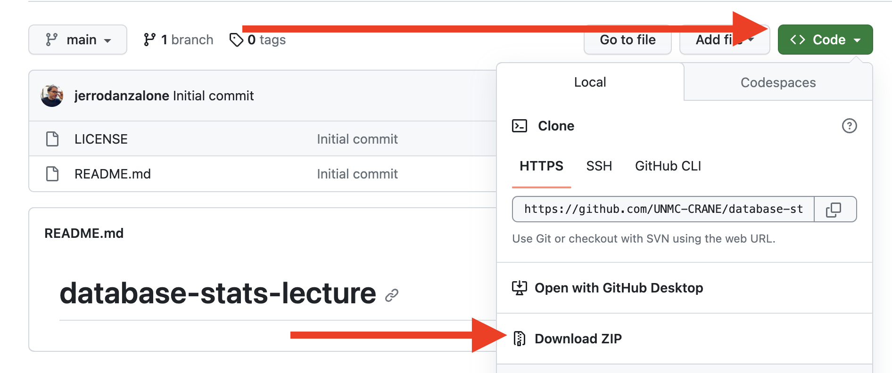

The objective of this lecture is to introduce the fundamentals of databases, with a focus on SQLite as a lightweight and practical database engine. SQLite is widely used in various applications, including mobile apps and embedded systems, making it an invaluable tool for anyone working with data (Hipp 2020).
To follow along with this lecture, please download the entire project repository from GitHub here. Download the entire repository from the main project page then open the Database lecture.Rproj file in RStudio to access the code and the Database lecture.html file in a web browser to follow along.

Download Instructions
What is a Database?
A database is a structured collection of data that allows for efficient retrieval and manipulation. It offers a systematic way to store, manage, and retrieve information. Databases are critical in various sectors, including healthcare, finance, and academia, for tasks such as inventory management, patient record-keeping, and research data analysis (Date 2006).
Why Databases are Important for Biostatisticians
Databases serve as an essential tool for biostatisticians for several reasons:
Data Integrity: Databases ensure the accuracy and consistency of data, which is vital for statistical analyses.
Scalability: As the volume of healthcare data grows, databases can scale to handle large datasets effectively.
Query Capability: Sophisticated query languages like SQL allow for intricate data manipulation and retrieval, aiding in more nuanced analyses.
Data Security: Sensitive information, such as patient data, can be securely managed and accessed.
By mastering the use of databases, biostatisticians are better equipped to handle the complexities of medical data, thus making more robust and reliable analyses possible.
Importance for Reproducibility
Reproducibility is a cornerstone of biomedical research. Databases contribute to reproducibility in several ways:
Data Versioning: Databases can keep track of data changes over time, allowing researchers to use specific data versions for their analyses. Structured Query Language (SQL): By sharing SQL queries, researchers can exactly replicate data retrieval methods, ensuring that the same subsets of data are used for analyses.
Metadata Storage: Additional data about the data, or metadata, can be stored and shared, providing context that aids in reproducibility.
By utilizing a database, biostatisticians can provide a transparent and replicable roadmap for their data handling procedures, thereby enhancing the integrity of their research.
Sharing and Replicating Findings
Databases also play a crucial role in sharing and replicating findings:
Data Sharing: Databases can be set up to allow controlled access to external researchers, facilitating broader analyses and scrutiny.
Uniform Structure: A well-designed database provides a uniform data structure that makes it easier for other researchers to understand and use the data.
Open-Source Databases: The use of open-source databases allows for the free sharing of data and methods, encouraging community contributions and vetting.
By employing databases, biostatisticians not only make their own research more robust but also contribute to a broader ecosystem of scientific validation.
Types of Databases
Relational Databases
Relational databases are the most commonly used type of database. In a relational database, data is organized into tables with rows and columns. These tables are interconnected through keys, allowing for complex queries and manipulations. Relational databases are extremely versatile and can be used in a myriad of applications, from simple contact management systems to complex EHRs.
# Example of a relational database structure in Rpatient_table <-data.frame(ID =c(1, 2, 3),FirstName =c("Alice", "Bob", "Chuck"),LastName =c("Smith", "Sauce", "McGill"),Age =c(25, 30, 22),Sex =c("Female", "Male", NA),Phone =c("123-456", "789-1234", "567-8912"),Email =c("alice@email.com", "bob@email.com", "chuck@email.com"))print(patient_table)
ID FirstName LastName Age Sex Phone Email
1 1 Alice Smith 25 Female 123-456 alice@email.com
2 2 Bob Sauce 30 Male 789-1234 bob@email.com
3 3 Chuck McGill 22 <NA> 567-8912 chuck@email.com
Document-Based Databases
In contrast to relational databases, document-based databases are designed to store, manage, and retrieve document-oriented information. Each ‘document’ in this type of database is a complex data structure and can contain fields, like in a relational database, but also more complex data types like arrays or nested records. Document-based databases are particularly useful for storing large volumes of unstructured data.
Key-value stores are the simplest form of database where each data item is stored as an attribute name (or ‘key’), together with its value. These databases are highly optimized for operations that retrieve or write data based on a single key. Key-value stores are often used in caching systems and real-time analytics applications.
# Key-Value Storekey_value_store <-list("1"=list(Name ="Alice", Age =25),"2"=list(Name ="Bob", Age =30))
Transactional Databases
Transactional databases are designed to handle transactions, which are sequences of database operations that are executed as a single unit. These databases use protocols like two-phase commit to ensure that transactions are processed reliably and are ACID-compliant (Atomicity, Consistency, Isolation, Durability).
# Transactional Database (Simulated as a series of operations)transactional_database <-function() {# Start Transactioncat("Start Transaction\n")# Operation 1: Add Recordcat("Operation 1: Add Record\n")# Operation 2: Update Recordcat("Operation 2: Update Record\n")# Commit Transactioncat("Commit Transaction\n")}
Databasics
Database: A collection of related tables, each table with its own rows and columns
A conceptual entity (Lab Order, Lab Result, Demographics) is represented by one table
Attributes (lab unit or lab value) are represented by one column
Columns contain similar types of information (date and time or name) containing only one type of data (integer, varchar, binary)
Rows represent one instance of a table entry, such as a lab order or lab result or a single patient for the Demographic table
Demographic Table
Importance of Databases
Databases are integral in various industries, including healthcare, finance, and retail. In academia, databases serve as invaluable tools for research, aiding in data collection and analysis.
Database Structure
Tables, Records, and Fields
At the most basic level, databases are composed of tables, which are further broken down into records and fields. Each table represents a specific entity, like a patient or a medical procedure, and each record within that table is a single instance of that entity. Fields, on the other hand, are individual pieces of data that describe the characteristics of the entity.
# Example of a table structure in Rpatient_table <-data.frame(PATID =c(1, 2, 3),BIRTH_DATE =c("2000-01-01", "1999-12-31", "1989-02-14"),Sex =c("Female", "Male", NA))patient_table$BIRTH_DATE <-as.Date(patient_table$BIRTH_DATE)print(patient_table)
PATID BIRTH_DATE Sex
1 1 2000-01-01 Female
2 2 1999-12-31 Male
3 3 1989-02-14 <NA>
Relational Databasics
Basics of Relational Databases
What is a Relational Database?
A relational database is a type of database that uses a structure called a “table” to organize data into rows and columns. Each row represents a unique record, and each column represents a field in the record.
Tables
Tables hold the data in a relational database. Each table should store data about a particular type of entity. For instance, a Patients table might store data about patients.
Fields and Records
Fields are the different pieces of data that are stored for each record in a table. Records are the individual entries in a table.
Keys
A primary key is a field, or a set of fields, that uniquely identifies each record in a table. For instance, a PatientID field could serve as the primary key in a Patients table.
Primary key: a key in a relational database that is unique for each record. In the Demographics table, this would be the PATID
Foreign Key: a column or group of columns in a relational database table that provides a link between data in two tables. It acts as a cross-reference between tables because it references the primary key of another table, thereby establishing a link between them. The PATID from the Demographics table is the most common foreign key across the database.
Relationship Overview
Types of Relationships
1 to Many (1:M): This should be the norm in any relational database design and is found in all relational database environments. For example, one department has many employees.
Many to Many (M:N): each row in table A can reference many rows in table B, and each row in table B can reference many rows in table A.
1 to 1 (1:1): A one to one (1:1) relationship is the relationship of one entity to only one other entity, and vice versa. It should be rare in any relational database design. The previous diagram is a good example. One patient dies one time, so there will be a one-to-one relationship.
Structured Query Language (SQL)
Structured Query Language (SQL) is the de facto language of all Relational Database Management systems. SQL was formalized in 1986 by the American National Standards Institute (ANSI) and the international Organization for Standardization (ISO). While there are different versions of SQL, they are all built on these standards and are only slightly different in execution (Jamison 2003).
THE MIGHTY SELECT STATEMENT
Basic Syntax:
SELECTcolumn(s)FROMtable(s)WHERE condition(s);
The symbol * means all columns in SQL.
To query all columns and all rows in a table with no filters or conditions, use the following syntax:
SELECT*FROMtable;
Functions in SQL
The COUNT() function returns the number of rows that matches a specified criterion.
SELECTCOUNT(column)FROMtableWHERE condition;
The AVG() function returns the average value of a numeric column.
SELECTAVG(column)FROMtableWHERE condition;
The SUM() function returns the total sum of a numeric column.
SELECTSUM(column)FROMtableWHERE condition;
Filtering Results Using WHERE
Basic syntax:
SELECTcolumn(s)FROMtable(s)WHERE condition(s);
The WHERE clause is used to filter results returned by a query, to extract only the rows that fulfill a specific condition.
You can also add a sorting clause here ORDER BY, which sorts alphanumerically. You can use ORDER BY column DESC to reverse the order.
Querying Multiple Tables
(INNER) JOIN: returns records with matching values in both tables
LEFT (OUTER) JOIN: returns all records from the left table and only those that match in the right table
RIGHT (OUTER) JOIN: returns all records from the right table and only those that match in the left table
SELF JOIN: similar to a regular join, but one in which the values of a table are compared with itself
Querying Multiple Tables
INNER JOINS
Basic Syntax:
SELECT table1.columnX, table2.columnY FROM table1INNERJOIN table2 ON table1.column_name = table2.column_name;
SELECT columnX, columnY FROM table1LEFTJOIN table2 ON table1.column_name= table2.column_name;
RIGHT JOIN Syntax:
SELECT columnX, columnY FROM table1RIGHTJOIN table2 ON table1.column_name= table2.column_name;
Self JOIN
A self JOIN is useful in certain circumstances. It requires use of an alias using the following syntax:
#| echo: trueSELECT A.columnX, B.columnXFROM table_name A, table_name B WHERE A.columnX = B.columnX;
SQLite in R
What is SQLite?
SQLite is a C library that provides a lightweight disk-based database. It allows access to the database using a nonstandard variant of the SQL query language. SQLite is popular because it is easy to install and use for lightweight applications, including mobile apps (Hipp 2020).
Setting up SQLite in R
To interact with SQLite databases in R, you can use the RSQLite package. You can install it using install.packages("RSQLite").
# Load the RSQLite packagelibrary(RSQLite)
Creating a Database and Tables
The first step in working with SQLite in R is to create a new SQLite database. This is done using the dbConnect() function.
# Create a new SQLite databasecon <-dbConnect(SQLite(), dbname ="my_database.sqlite")
Creating Tables
Next, let’s create a table to store information about patients.
# Create a 'Patients' tabledbExecute(con, "CREATE TABLE IF NOT EXISTS Patients (PatientID INTEGER PRIMARY KEY, Name TEXT, Age INTEGER);")
[1] 0
Inserting Data
We can insert data into the Patients table using the dbExecute() function.
# Insert data into the 'Patients' tabledbExecute(con, "INSERT INTO Patients (Name, Age) VALUES ('Alice', 30);")
[1] 1
dbExecute(con, "INSERT INTO Patients (Name, Age) VALUES ('Bob', 40);")
[1] 1
Querying Data
We can use the dbGetQuery() function to retrieve data from the database.
# Retrieve all records from the 'Patients' tableresult <-dbGetQuery(con, "SELECT * FROM Patients;")print(result)
PatientID Name Age
1 1 Alice 30
2 2 Bob 40
You can also print the query out in SQLite using dbGetQuery():
# Retrieve all records from the 'Patients' tabledbGetQuery(con, "SELECT * FROM Patients;")
PatientID Name Age
1 1 Alice 30
2 2 Bob 40
Updating and Deleting Data
SQLite allows for updating and deleting records using the UPDATE and DELETE SQL statements, respectively.
# Update Alice's age to 31dbExecute(con, "UPDATE Patients SET Age = 31 WHERE Name = 'Alice';")
[1] 1
# Delete Bob from the databasedbExecute(con, "DELETE FROM Patients WHERE Name = 'Bob';")
[1] 1
Adding an Additional Table from an R DataFrame
One of the powerful features of RSQLite is its ability to directly import R DataFrames into SQLite databases as tables. Let’s create an R DataFrame called Encounters and add it to the SQLite database.
# Create an R DataFrame called 'Encounters'Encounters <-data.frame(EncounterID =c(1, 2, 3),PatientID =c(1, 1, 2),EncounterType =c("Emergency", "Follow-up", "Emergency"),EncounterDate =as.Date(c('2023-01-01', '2023-01-15', '2023-01-20')))# Add the 'Encounters' DataFrame as a table in SQLite databasedbWriteTable(con, "Encounters", Encounters)
Querying Across Multiple Tables
In SQLite, you can perform joins to query data across multiple tables. For instance, to get a list of patients and their corresponding encounters, you could perform an SQL join operation.
# Perform a query joining 'Patients' and 'Encounters' tables based on 'PatientID'joined_result <-dbGetQuery(con, "SELECT Patients.PatientID, Patients.Name, Encounters.EncounterType, Encounters.EncounterDate FROM Patients JOIN Encounters ON Patients.PatientID = Encounters.PatientID;")print(joined_result)
PatientID Name EncounterType EncounterDate
1 1 Alice Emergency 19358
2 1 Alice Follow-up 19372
Deleting a Table
If you need to remove a table from an SQLite database, you can use the DROP TABLE SQL statement.
# Delete the 'Patients' table from the databasedbExecute(con, "DROP TABLE Patients;")
[1] 0
Deleting the Database
SQLite databases are stored as single disk files.
This is a very lightweight file that can be moved around as needed. Deleting the SQLite database is as simple as removing this file. However, make sure to first disconnect from the database in R.
# Disconnect from the SQLite databasedbDisconnect(con)# Delete the SQLite database filefile.remove("my_database.sqlite")
[1] TRUE
Practical Example Using Synthetic Data
This section aims to demonstrate how to create a new SQLite database named synthea and populate it with tables generated from all the CSV files in a specific directory. This is particularly useful for batch importing large datasets into a database (Walonoski et al. 2018).
For this exercise, we will be using a synthetically generated sample of patient data from the open-source tool Synthea.
Before proceeding, make sure you have the following R packages installed. If not, you can install them using install.packages().
# Required packagesrequired_packages <-c("RSQLite", "data.table", "dplyr", "purrr")# Install missing packages# Uncomment the next lines if you need to install packages# new_packages <- required_packages[!(required_packages %in% installed.packages()[,"Package"])]# if(length(new_packages)) install.packages(new_packages)# Load the packageslibrary(RSQLite)library(data.table)library(dplyr)
Attaching package: 'dplyr'
The following objects are masked from 'package:data.table':
between, first, last
The following objects are masked from 'package:stats':
filter, lag
The following objects are masked from 'package:base':
intersect, setdiff, setequal, union
library(purrr)
Attaching package: 'purrr'
The following object is masked from 'package:data.table':
transpose
Step 1: Create a New SQLite Database
The first step is to create a new SQLite database named synthea.
# Create a new SQLite database named 'synthea'con <-dbConnect(SQLite(), dbname ="synthea.sqlite")
Step 2: List All CSV Files in the Directory
List all the CSV files present in the target directory where your CSV files are stored. Replace your_directory_path with the actual path to your directory. I have them stored in the directory /csv in this R project.
# List all CSV files in the directorycsv_files <-list.files(path ="csv", pattern ="*.csv", full.names =TRUE)
Step 3: Import Each CSV File as a Table
We will use a loop or an apply function to read each CSV file and write it as a new table in the SQLite database.
# Function to read a CSV file and write it to SQLite databaseimport_csv_to_sqlite <-function(csv_file, con) {# Extract table name from file name table_name <- tools::file_path_sans_ext(basename(csv_file))# Use fread to read the CSV file into an R DataFrame df <-fread(csv_file)# Write the DataFrame as a table in SQLite databasedbWriteTable(con, table_name, df)}# Import all CSV files into the SQLite databasewalk(csv_files, ~import_csv_to_sqlite(.x, con))
Verification
After running the above code, you should have an SQLite database named synthea with tables corresponding to each of the CSV files in the directory. You can verify this by listing the tables in the database.
# List all tables in the SQLite databasedbListTables(con)
Or if we want to pull all the distinct MALE patients on a specific medication, we can also do so:
dbGetQuery(con, "SELECT * FROM PATIENTS WHERE GENDER = 'M' AND ID IN (SELECT DISTINCT PATIENT FROM Medications WHERE DESCRIPTION LIKE 'Acetaminophen%');")
Id BIRTHDATE DEATHDATE SSN
1 2de0b259-6c63-700d-9ac4-edcabff0861a 17485 NA 999-17-9786
2 cc5fdb8d-297d-0e33-9c5a-6206c223b79b 15853 NA 999-69-2035
3 891d1d6c-7888-d953-1369-515ca099af45 13183 NA 999-41-2600
4 2216f688-b27d-dc7a-39b5-ba2cfefa6c37 2640 NA 999-53-2311
5 bfeddd2d-bbed-66b3-262e-9be26962f109 6836 NA 999-60-7021
6 c700851d-891c-73af-9259-672e4038c127 -8606 NA 999-86-4496
7 1fa97a23-2794-562e-e8c4-eb71c54ee283 4885 NA 999-94-2926
8 c6a6d108-fe1f-af13-a82d-914b4ff83d7f 14756 NA 999-16-6097
9 97caa214-b04c-18e6-64e4-bba76a3d6aff 15187 NA 999-73-8752
10 feaeaee4-469e-4006-e8b5-a18bc7956f36 6455 NA 999-76-3305
11 9f994882-47eb-994a-2518-1335566286ae 17012 NA 999-36-6593
12 a62dbaa9-19ae-a93c-300f-da80d0f2fd23 8120 NA 999-58-5451
13 ca131414-b5fc-8ca8-3530-18098789a289 -7401 15342 999-37-2380
14 d971d3b5-0b4b-14aa-6b91-e18e44aaa996 12973 NA 999-98-6377
15 d7feefea-193a-5d57-c984-e0dc467d3b17 3609 NA 999-15-9631
16 8f78db1f-07e1-f25a-8d85-615ca694c7f6 12826 NA 999-10-7524
17 5b8afb71-6e77-2447-297b-dfe821cd8d05 -7401 12651 999-75-2226
18 31b795d1-07f2-1a03-11a9-d8fa45aa82a7 9425 NA 999-54-6173
19 ad63c02c-b783-6730-61bf-bab49253686a -5910 16891 999-29-2666
20 ec6ddf28-2d8f-2e05-3323-1997b9dcb29d 18126 NA 999-10-4581
21 4bbafa61-1236-1e94-fb9e-d2481f227043 9764 NA 999-69-8109
22 cde1728a-5d22-7057-a07b-b8adeb2c22cc 8183 NA 999-91-8026
23 4d62076f-9a98-620d-2852-8f142de10d63 12578 NA 999-27-2289
24 b78fc287-8d93-439f-4ffc-2a2c35456fe9 17641 NA 999-66-8821
25 aedc8636-f3da-7477-9cd7-2041befea28e 15440 NA 999-53-8764
26 ecec3b30-1c84-6edd-4d10-40f72c072a26 15237 NA 999-94-1256
27 702f548d-559b-2779-997f-93b0cb0cd132 16272 NA 999-90-9169
28 f5bf24a8-0b71-da57-0501-4f282bd55e57 -7401 NA 999-43-6533
29 07b6f3a4-65ff-103c-f283-8f11ac43be54 -2860 NA 999-99-5239
DRIVERS PASSPORT PREFIX FIRST LAST SUFFIX MAIDEN MARITAL
1 Lou594 Little434
2 Joesph309 Leannon79
3 S99930639 Freddie621 Dietrich576
4 S99952681 X44046122X Mr. Darryl392 Klein929 M
5 S99926718 X26264225X Mr. Santiago500 Hilll811 S
6 S99985203 X81511228X Mr. Dong972 Kohler843 D
7 S99962372 X13897083X Mr. Freddy176 Collins926 D
8 Delbert384 Waters156
9 Gale827 Murray856
10 S99949397 X69081022X Mr. Gary33 Walter473 D
11 Demarcus108 Becker968
12 S99926204 X66213408X Mr. Chester802 Rippin620 M
13 S99933737 X84780606X Mr. Wallace647 Gerlach374 M
14 S99978729 Mr. Trent525 Rodriguez71
15 S99931324 X72190123X Mr. Junior695 Mertz280 D
16 S99961136 Mr. Gilberto712 Schultz619
17 S99919528 X3642299X Mr. Sam879 Kerluke267 M
18 S99985010 X11462942X Mr. Rashad361 Watsica258
19 S99917285 X79081060X Mr. Raymundo71 Hilll811 S
20 Felix524 Senger904
21 S99992981 X40864363X Mr. Barney639 Yost751
22 S99971286 X70540146X Mr. Sherman440 Ankunding277 M
23 S99932431 Mr. Norbert530 Terry864
24 Alfredo17 Naranjo39
25 Dexter530 Willms744
26 Stanford577 Aufderhar910
27 Gale827 Schoen8
28 S99984661 X83713035X Mr. Pasquale620 Miller503 M
29 S99956630 X26723926X Mr. Merlin721 Kuvalis369 MD D
RACE ETHNICITY GENDER BIRTHPLACE
1 white nonhispanic M Omaha Nebraska US
2 white nonhispanic M Newcastle Nebraska US
3 white nonhispanic M Neligh Nebraska US
4 black nonhispanic M Papillion Nebraska US
5 white nonhispanic M South Sioux City Nebraska US
6 white nonhispanic M Chalco Nebraska US
7 white nonhispanic M Kearney Nebraska US
8 white nonhispanic M Bellevue Nebraska US
9 white nonhispanic M Blair Nebraska US
10 white nonhispanic M Pilger Nebraska US
11 white nonhispanic M Hickman Nebraska US
12 white nonhispanic M Lakeview Nebraska US
13 white hispanic M Omaha Nebraska US
14 white nonhispanic M Ogallala Nebraska US
15 white nonhispanic M Milford Nebraska US
16 white nonhispanic M Lincoln Nebraska US
17 white hispanic M Minden Nebraska US
18 white hispanic M Gering Nebraska US
19 white nonhispanic M Friend Nebraska US
20 white nonhispanic M Norfolk Nebraska US
21 white hispanic M Omaha Nebraska US
22 white nonhispanic M Omaha Nebraska US
23 white nonhispanic M Lincoln Nebraska US
24 white hispanic M Mexico City Mexico City MX
25 white nonhispanic M Lincoln Nebraska US
26 white nonhispanic M Omaha Nebraska US
27 white nonhispanic M Lincoln Nebraska US
28 white hispanic M Sheridan Nebraska US
29 white nonhispanic M Omaha Nebraska US
ADDRESS CITY STATE COUNTY FIPS
1 974 Kunde Burg Apt 79 Omaha Nebraska Douglas County 31055
2 521 Halvorson Alley Unit 47 Columbus Nebraska Platte County 31141
3 649 Lesch Avenue Omaha Nebraska Douglas County 31153
4 809 Botsford Meadow Omaha Nebraska Douglas County 31055
5 592 Weber Grove Omaha Nebraska Douglas County 31055
6 838 Pfannerstill Tunnel Auburn Nebraska Nemaha County 31127
7 249 Eichmann Landing Suite 65 Lincoln Nebraska Lancaster County 31109
8 137 Gerhold Junction Crete Nebraska Saline County 31151
9 127 Feil Bay Spade Nebraska Knox County NA
10 1021 Wilderman Boulevard Unit 33 Lincoln Nebraska Lancaster County 31109
11 850 Herzog Esplanade Apt 78 Columbus Nebraska Platte County 31141
12 436 Herzog Tunnel Unit 91 Omaha Nebraska Douglas County 31055
13 634 Luettgen Walk Omaha Nebraska Douglas County 31055
14 884 Torp Orchard Lincoln Nebraska Lancaster County 31109
15 888 Ziemann Center Lincoln Nebraska Lancaster County 31109
16 586 Cremin Lock Papillion Nebraska Sarpy County 31153
17 955 Waters Rapid Apt 86 Omaha Nebraska Douglas County 31055
18 481 Mante Trail Bellevue Nebraska Sarpy County 31153
19 783 Beahan Stravenue Ainsworth Nebraska Brown County 31017
20 477 Hyatt Gate Lincoln Nebraska Lancaster County 31109
21 770 Will Passage Unit 84 Papillion Nebraska Sarpy County 31153
22 796 Spinka Esplanade Apt 40 Gothenburg Nebraska Dawson County 31047
23 487 Gottlieb Trailer Suite 81 Omaha Nebraska Douglas County 31055
24 255 Metz Mews Apt 24 Waco Nebraska York County 31185
25 179 Corwin Rapid Suite 59 Lincoln Nebraska Lancaster County 31109
26 617 Labadie Crossing Ord Nebraska Valley County 31175
27 1025 Watsica Gate Bellevue Nebraska Sarpy County 31153
28 846 Bechtelar Rest Unit 82 Omaha Nebraska Douglas County 31055
29 883 Runolfsdottir Road Columbus Nebraska Platte County 31141
ZIP LAT LON HEALTHCARE_EXPENSES HEALTHCARE_COVERAGE INCOME
1 68114 41.28058 -95.94094 11371.12 0.00 86188
2 68601 41.48527 -97.38583 1435.45 14351.34 22017
3 68157 41.21922 -95.95941 23465.86 275.72 47297
4 68154 41.25389 -96.15167 81264.57 3052.99 84911
5 68107 41.29421 -96.20077 66590.86 34011.94 47545
6 68305 40.36534 -95.88726 195740.29 565049.42 27647
7 68526 40.93522 -96.68012 63400.65 0.00 118835
8 68333 40.63846 -96.91843 46217.78 45847.44 124622
9 0 42.62153 -97.90835 39904.70 0.00 68583
10 68521 40.69102 -96.78423 73799.00 0.00 85583
11 68601 41.46893 -97.38312 10571.53 922.70 56327
12 68130 41.21671 -96.06093 63714.53 171540.42 55867
13 68111 41.25586 -95.97228 164518.88 169026.92 38893
14 68504 40.76999 -96.62152 65211.01 672748.00 123829
15 68503 40.73858 -96.65634 75924.75 14298.76 161569
16 68046 41.12813 -96.00020 2700.00 32944.23 29583
17 68118 41.25859 -96.00258 102490.30 131668.23 38893
18 68133 41.16322 -95.88704 14513.65 968894.56 21796
19 69210 42.32205 -99.89476 363286.88 58984.31 81395
20 68514 40.74158 -96.62433 9013.71 0.00 188943
21 68157 41.06783 -95.98432 31980.13 36357.40 48501
22 69138 40.90435 -100.12568 134709.47 316022.93 61684
23 68122 41.34639 -96.13498 40245.80 0.00 79314
24 68460 40.89417 -97.42915 750.00 13404.49 26433
25 68512 40.76054 -96.75255 18122.32 0.00 67462
26 68862 41.60164 -98.90626 18172.68 3133.84 47068
27 68147 41.06647 -95.94920 10318.23 3913.78 54902
28 68111 41.32460 -96.27703 374404.78 157471.04 38893
29 68601 41.42530 -97.39204 135224.05 0.00 116501
We are now done with our simple example. Disconnect and delete our work thus far (unless you want to keep it for some reason).
# Disconnect from the SQLite databasedbDisconnect(con)# Delete the SQLite database filefile.remove("synthea.sqlite")
[1] TRUE
The last exercise is to work through some practical examples using a more complicated synthetic dataset, generated using Synthea. Please open sqlite_exercises_synthea to complete some additional exercises. You may also use tools like DB Browser for SQLite to query against your newly created database.
References
Date, CJ. 2006. An Introduction to Database Systems. Pearson Education India.
Hipp, Richard D. 2020. “SQLite, 2020.”URL Https://Www.sqlite.org/Index. Html, 35.
Jamison, D Curtis. 2003. “Structured Query Language (SQL) Fundamentals.”Current Protocols in Bioinformatics, no. 1: 9–2.
Walonoski, Jason, Mark Kramer, Joseph Nichols, Andre Quina, Chris Moesel, Dylan Hall, Carlton Duffett, Kudakwashe Dube, Thomas Gallagher, and Scott McLachlan. 2018. “Synthea: An Approach, Method, and Software Mechanism for Generating Synthetic Patients and the Synthetic Electronic Health Care Record.”Journal of the American Medical Informatics Association 25 (3): 230–38.


 This is a very lightweight file that can be moved around as needed. Deleting the SQLite database is as simple as removing this file. However, make sure to first disconnect from the database in R.
This is a very lightweight file that can be moved around as needed. Deleting the SQLite database is as simple as removing this file. However, make sure to first disconnect from the database in R.